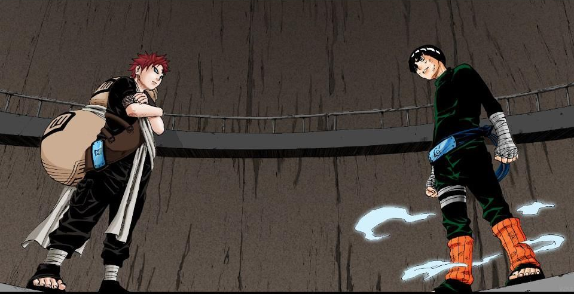

Rock Lee
Rock Lee é um personagem da série "Naruto" criado por Masashi Kishimoto. Ele é um ninja da Vila da Folha e um membro do Time Guy, liderado por Might Guy. Aqui estão alguns pontos
importantes sobre Rock Lee:Ausência de Habilidades Ninjutsu e Genjutsu:
Uma característica distintiva de Rock Lee é que ele é incapaz de realizar técnicas de ninjutsu e genjutsu. Em um mundo ninja onde muitos se destacam nessas áreas, Lee é uma exceção notável.
Foco em Taijutsu:
Para compensar sua falta de habilidade em ninjutsu e genjutsu, Rock Lee se especializa em taijutsu, que é uma arte de combate corpo a corpo. Ele treina arduamente para desenvolver suas habilidades físicas e se tornar um mestre em técnicas de luta corporal.
Pesos Treinamentos:
Rock Lee é conhecido por seu trabalho árduo e dedicação aos treinos. Ele é um dos ninjas mais esforçados da série, muitas vezes treinando até a exaustão para superar suas limitações.
Traje Verde e Pesos nos Tornozelos:
Lee é conhecido por seu traje característico verde e pelos pesos pesados que ele usa nos tornozelos. Ele retira esses pesos durante batalhas mais sérias para aumentar sua velocidade e agilidade.
Técnica de Abertura dos Oito Portões:
Uma de suas técnicas mais poderosas é a "Abertura dos Oito Portões", que envolve a abertura de chakras restritos em seu corpo para aumentar significativamente sua força e velocidade. No entanto, essa técnica é perigosa e pode causar danos irreparáveis ao usuário.
Relacionamento com Might Guy:
Rock Lee tem um próximo relacionamento com seu sensei, Might Guy, que também é seu mentor e modelo. Guy ensina a Lee a importância do esforço e da superação pessoal.
Participação em Exames e Missões:
Rock Lee participa de vários Exames Chunin e missões ao lado de seus companheiros de equipe, Neji Hyuga e Tenten. Sua determinação e habilidades em taijutsu freqüentemente surpreendem seus oponentes.
Participação na Guerra Shinobi:
Durante a Quarta Grande Guerra Ninja, Rock Lee desempenha um papel ativo como parte das forças aliadas. Sua dedicação e bravura são destacadas em vários benefícios. Rock Lee é admirado por sua ética de trabalho, determinação e sua capacidade de superar desafios usando apenas habilidades físicas. Sua história e evolução ao longo da série se tornam um personagem querido entre os fãs de “Naruto”.